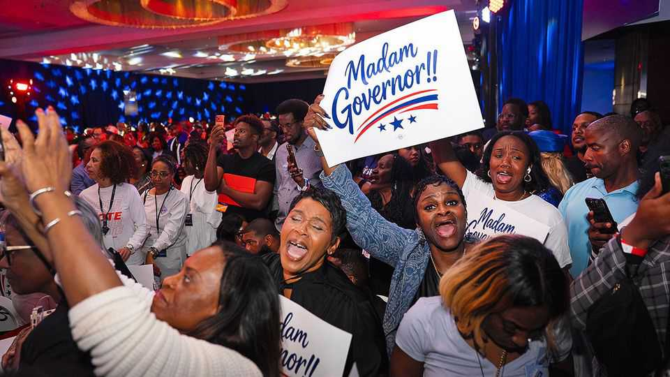
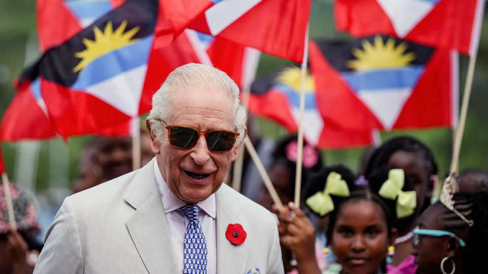

Politics

Nov 5th 2026
The Democratic Party won a landslide in America’s midterm elections, gaining majorities in both houses of Congress. In the Senate the party captured seven seats, giving it at least 54 (although Senate races in Alaska and Mississippi are too close to call). Democrats took control of the House of Representatives with the biggest popular-vote margin since 1976.
Donald Trump tried to distance himself from the defeat, claiming that the Republican Party “would have won in a landslide” had he been on the ballot. But Americans were angry at the president’s war in Iran, which has pushed up prices, and corruption. Republicans turned to infighting. J.D. Vance, the vice-president, offered his diagnosis: “The reason we lost is the war.”
The Democrats gained Senate seats in Republican strongholds. James Talarico became the first Democratic senator elected in Texas in 38 years, beating the Republican candidate, Ken Paxton, by 12 points. Adam Hamilton took the party’s first seat in Kansas since 1932. Annie Andrews won in South Carolina, which had voted for Mr Trump by 18 points in 2024. The Democrats regained support among Hispanic voters, who had swung sharply towards Mr Trump in 2024. This helped negate Republican gerrymandering in House districts in the South.
A day before the election American forces bombed Qeshm Island in the Strait of Hormuz. The Iranian island hosts several military bases. American officials described the strikes as “defensive”. Mr Trump said that he is not planning to restart the war in Iran, even as he hinted that American forces are ready to launch strikes on the country.
Mr Trump said that America would stop providing around $4bn a year in aid to Israel at the end of 2026. The funding is not due to expire until 2028. Mr Trump said Democrats had used his administration’s support for Israel as a “bad talking-point” during the midterms. Binyamin Netanyahu, Israel’s prime minister, has repeatedly said that he wants to wean Israel off American aid.
Joshua Wong, a pro-democracy activist in Hong Kong, was sentenced to ten years in jail. Mr Wong was already serving a shorter sentence under the territory’s national-security law. Meanwhile John Lee, Hong Kong’s leader, apologised after an inquiry exposed regulatory failures and corruption behind a fire in a housing estate last year. The blaze killed 168 people.
Indonesia deployed 20,000 troops to Jakarta, the capital, after the authorities accused several people of snooping on the communications of Prabowo Subianto, the president. Mr Prabowo’s chief of staff and two senior police officers were arrested. An ally of Mr Prabowo said the wiretapping scandal could amount to an attempt to overthrow the government.
Japan’s government created the National Disaster Management Agency, which will oversee its preparation and response to calamities such as earthquakes, tsunamis and volcanic eruptions. The agency, which has roughly 350 staff, will co-ordinate between different departments.
Early results in South Africa’s local elections pointed to a bad outcome for the African National Congress. The once-hegemonic party was on course to win about 32% of the vote, its lowest-ever share in a nationwide election. The second-largest party, the Democratic Alliance, was set to win the most votes in Johannesburg, the commercial capital. Whether its candidate, Helen Zille, becomes mayor will depend on coalition talks.
America said it would exclude South Africa and Rwanda from the African Growth and Opportunity Act (AGOA) from next year. The law, passed in 2000, allowed them to export certain goods to America duty-free. The Trump administration is annoyed about South Africa’s refusal to change race-based laws and Rwanda’s warmongering in the Democratic Republic of Congo. But since just a fraction of their exports to America were covered by AGOA, the economic impact will be limited.

King Charles attended the Commonwealth Summit in Antigua & Barbuda, alongside Britain’s prime minister, Andy Burnham. Some Caribbean leaders and activists demanded an apology and reparations for Britain’s role in the slave trade. Mr Burnham said he was open to discussing a formal apology, but ruled out paying reparations directly.
Donald Tusk, Poland’s prime minister, defended his efforts to overhaul the country’s Constitutional Tribunal. On October 30th judges appointed by Mr Tusk’s government took their seats on the court. Karol Nawrocki, the nationalist president, had refused to swear them in. One of the new judges suspended the court’s president, an ally of Mr Nawrocki’s Law and Justice (PiS) party. Mr Tusk said the move was necessary to restore the rule of law, which was undermined by PiS when it was in power in 2015-23. PiS accused Mr Tusk of a “coup”.
Bulgaria elected Iliana Yotova as its first female president. Ms Yotova describes herself as a “president of peace” and favours negotiations with Russia to end the war in Ukraine. Bulgaria’s presidency is a largely ceremonial role. But the election cements Bulgaria’s Russia-friendly tilt under its prime minister, Rumen Radev.
Dozens of supermarkets in Europe lost food after hackers meddled with the temperature settings of their fridges and freezers. Millions of euros’ worth of food was spoiled. Danfoss, a Danish company whose systems were targeted in the cyber-attacks, urged shopkeepers to update their software. Nobody has claimed responsibility for the attacks, though similar incidents earlier this year were linked to pro-Russian hackers.
Alexander Dobrindt, Germany’s interior minister, said there would be “severe penalties” after riots in Frankfurt. More than 100 police officers were injured. The violence followed protests against education-spending cuts and high living costs. Mr Dobrindt blamed “violent left-wing groups and troublemakers from migrant communities”.
Britain and the European Union agreed to a draft deal to remove border checks on food and agricultural goods. The agreement is a boon to British farmers, whose exports to the EU have fallen by a third since Britain left the bloc. It is one of several “mini-deals” (over students, electricity trading and other issues) that the two sides hope to seal before a summit on November 20th.